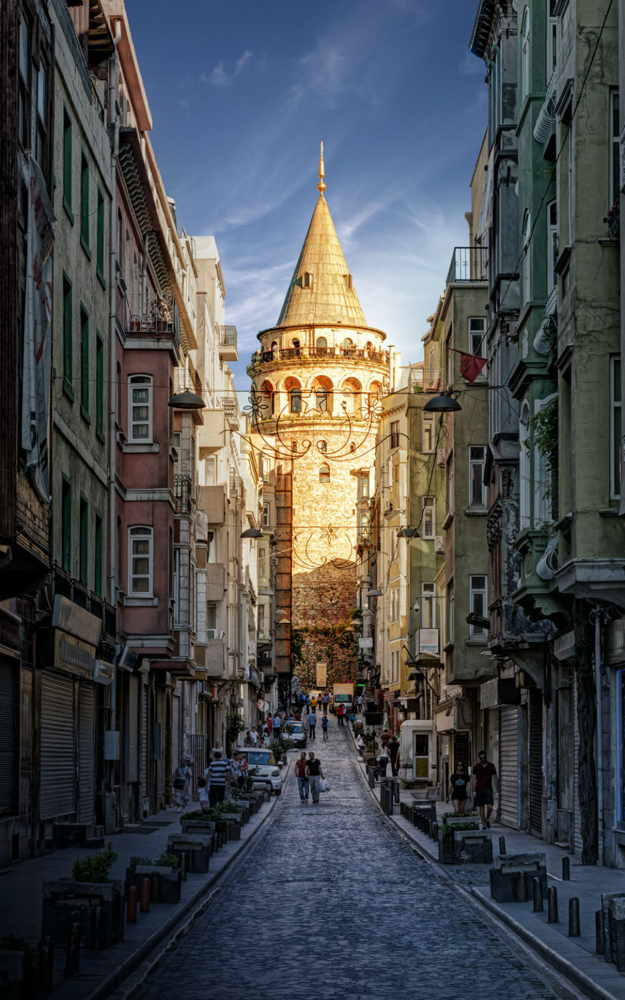
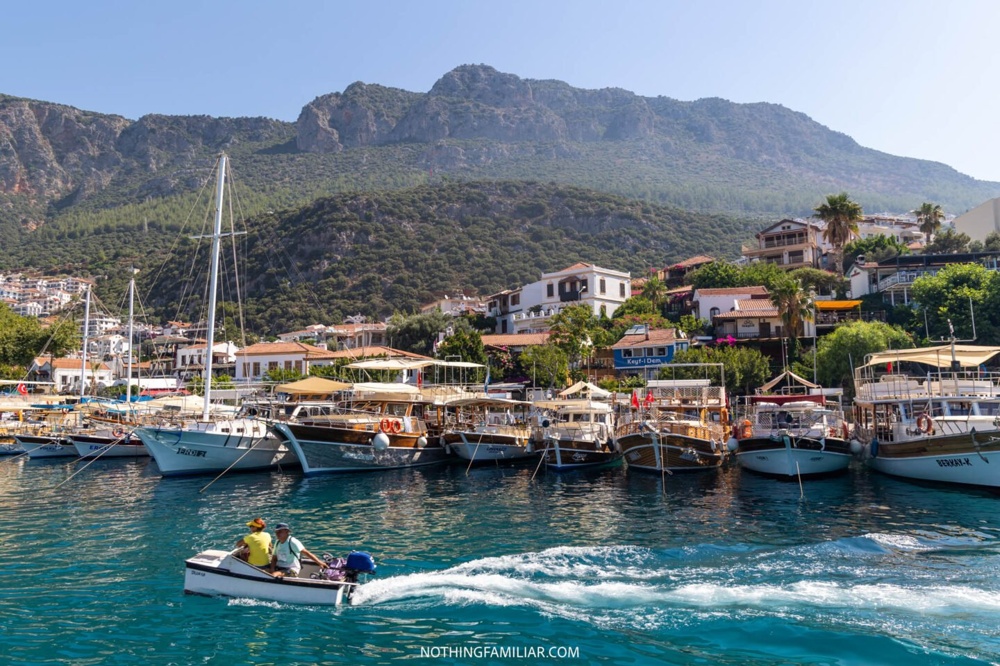
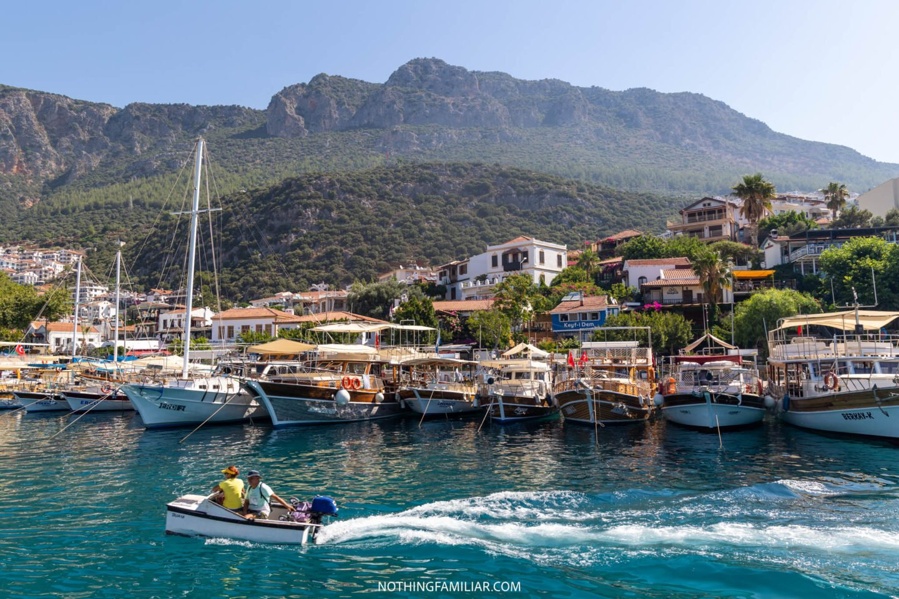

It'll take more than one vacation to cover all the wonderful places to visit in Turkey
One of the worlds greatest cities should be on every travelers must-visit list. The beautiful city of Istanbul is rich in both culture and history and it really is an amazing place to visit.
You can learn so much about the islamic culture and see the brilliant displays of artwork and architecture that were created during the reign of the Ottoman Empire.
Istanbul is unique and like any other city, it is literally a collision of two worlds - the European continent meets the Asian continent. Turkey is the sixth most visited country in the world and Istanbul is the eighth most visited visit. A place everyone should experience at least once in their life.

Marmaris is one of the Pearls of the Turkish Rivera and one of the most beautiful destinations to visit in Turkey.
Surrounded by mountains, pine forests and turquoise waters made for swimming, Marmaris is a popular destination for holidaymakers looking for relaxation, dining, bars and nightclubs.
It is the perfect destination for partying and lounging on the beaches.


Kas is one of the most beautiful destinations in Turkey. It is located in the province of Antalya. With its magnificent sea views, narrow streets, gorgeous beaches and great restaurants this is the perfect destination to blow up your instagram account.
A popular destination for outdoor enthusiasts, it sits between the Taurus Mountains and the Mediterranean Sea, while the 320-mile Lycian Way hiking route runs near the town, providing excellent hiking opportunities and the chance to do a host of activities including kayaking, scuba diving and paragliding.

 

Antalya is a beautiful city in Turkey, located on the Turquoise Coast in the south of the country.
Antalya is a popular tourist destination known for its stunning Mediterranean beaches, historical landmarks and cultural attractions.
It is is arguably the most popular tourist destination in Turkey.
The seaside city boasts fascinating historical sights, sandy beaches, a gorgeous old town that makes you feel as though youve stepped back in time as you wander the narrow streets.


From breathtaking sunrise hot air balloon rides over the otherworldly landscape, to unique cave hotels in Cappadocia, to picturesque valleys with unusual rock formations, Cappadocia has so much to discover.
Coming to Cappadocia is almost like visiting another planet. The landforms are so unique that its hard to believe they really exist until you see them with your own eyes.